Antes de qualquer coisa, faça seu login
Sempre antes de começar a mexer no Scratch, faça login no Scratch, clicando em "Entrar" no canto superior direito.

Usando uma caneta no Scratch
obs.: Lembre-se de mudar o idioma do Scratch clicando neste "globinho"
Adicionando a extensão da caneta no Scratch
Para adicionar a extensão da caneta no Scratch, basta clicar no botão "adicionar extensão" (na parte interior da coluna de categorias
de blocos de programação.
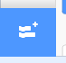
Depois clique na extensão chamada Caneta.
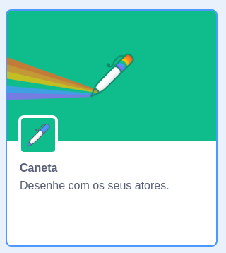
Criando um personagem mais apropriado
Antes de usarmos a ferramenta de caneta, vamos criar um novo personagem mais apropriado para essa ferramenta.
Delete o gatinho inicial e adicione o personagem "Pencil" (lápis em inglês) no seu projeto.
Vá nas fantasias do lápis e nós vamos ajustar para a ponta do lápis ficar bem no centro do desenho.
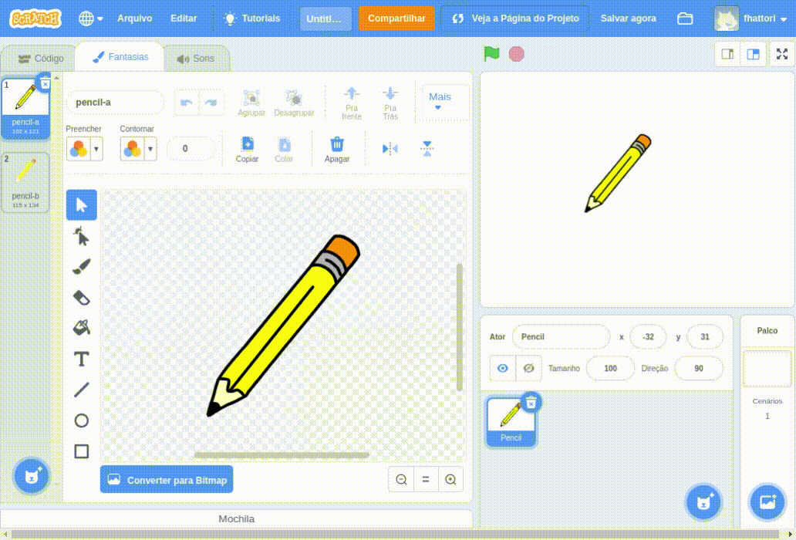
{kind=link}
Familiarize-se com a nova ferramenta
Depois de adicionar a extensão da caneta, surgirá uma nova categoria de blocos de programação chamada "Caneta" e 9 novos blocos.
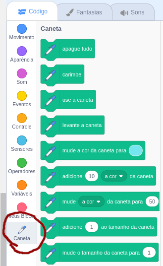
Experimentos
Agora vamos experimentar o que os novos blocos fazem. Teste cada um dos novos blocos para tentar entender o que eles fazem.
Dica: use os blocos sob o bloco "Quando [bandeirinha verde] for clicada" e use sempre também algum bloco de movimento.
Os algoritmos abaixo são alguns exemplos que você pode testar. Veja o que cada um desses algoritmos fazem e tente entender todos os 9 novos blocos de caneta.
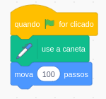
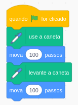
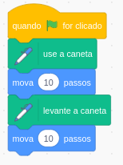
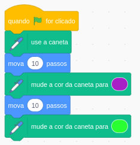
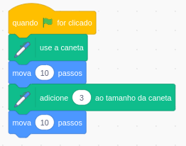
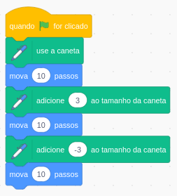
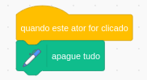
Todos esses exemplos são em linha reta. Como seria possível mudar a direção do que estou desenhando?
Teste também os blocos de "girar" e os blocos de "deslize até a posição X,Y"
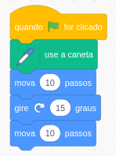
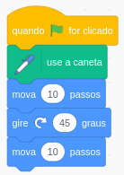
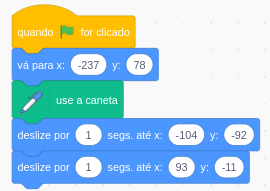
{kind=link}
{kind=link}
{kind=link}
{kind=link}
{kind=link}
{kind=link}
{kind=link}
{kind=link}
{kind=link}
{kind=link}
Atividade
Agora é com você. Depois de testar e entender o que cada um dos blocos da caneta fazem, você fará os seus próprios algoritmos utilizando a caneta.
Crie algoritmos que desenhe as formas geométricas básicas:
- Quadrado;
- Retângulo;
- Triângulo;
O objetivo desse algoritmo é que ele escreva seu nome inteiro depois que você clicar na [bandeirinha verde].
Não faça uma letra de cada vez.
Desafio extra: círculo
Como você faria um círculo? Tente descobrir como desenhar um círculo usando a caneta.